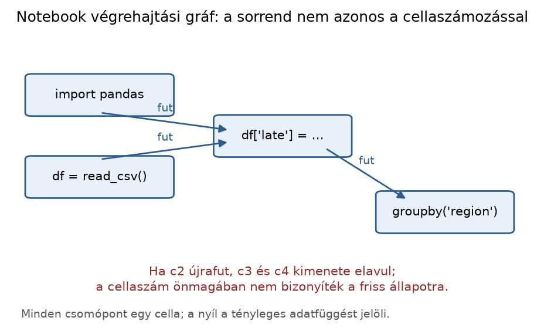

Belépő · szint: alap · idő: 45 perc · eszköz: JupyterLab, VS Code
Előfeltétel: 3.4. alfejezet · Célkészség: Notebook mint végrehajtási gráf · Kimenet: a fejezet feladatainak megoldása és önellenőrzés.
A notebook egy interaktív számítási gráf, nem csupán szöveges
dokumentum. Ebben az alfejezetben egy szándékosan rossz cellasorrendű
notebookot javítunk ki, és olyan futási bizonyítékot készítünk, amely
tiszta kernelből indítva is érvényes. Az eszköz a JupyterLab vagy a VS
Code Jupyter-kiterjesztése, a parancssori ellenőrzéshez pedig
nbconvert.
A lab/late_manual.ipynb notebookot egy kolléga „működő”
állapotban osztotta meg. A notebook a Northstar mini-változatát
használja: három rendelés, order_id,
delivery_days; a cél egy késési arányt kiírni. Az input
cellák hibás forrásbeli sorrendet tartalmaznak: a nyomtatás az első
cellában van, a számításhoz szükséges late_rate név azonban
csak egy későbbi cellában jön létre. A kolléga kézi futtatással mégis
látott eredményt, mert a cellákat a függőségi sorrendben futtatta, nem a
forrásbeli sorrendben. A feladat: rendezd a cellákat úgy, hogy a Restart
and Run All is hibátlanul lefusson, és a tiszta futást parancssorból is
bizonyítsd.
A mini-adat: O1 8 nap alatt érkezik, O2 5, O3 9; az ígért nap
promised_days=7. A célfüggvény
is_late(delivery_days, promised_days) igaz, ha a kézbesítés
késik. A kézi előzetes becslés: a három rendelésből kettő késik (O1 és
O3), tehát a késési arány
.
A notebooknak ezt kell kiírnia; a flags lista hosszának meg
kell egyeznie az orders hosszával, a late_rate
értéknek 0 és 1 közé kell esnie.
Egységek és alakok: delivery_days és
promised_days pozitív egész, mértékegysége nap;
orders 3 elemű lista, elemei dict;
flags 3 elemű lista, elemei bool;
late_rate skalár, valós érték
-ben.
A megfigyelési egység az adatban egy rendelés, a notebook-vizsgálatban egy cellavégrehajtás.
A Python-függvény elemi formában adja a modellt:
ahol -
a kézbesítési napok száma, mértékegysége nap; -
az ígért napok száma, mértékegysége nap; -
a logikai jelölés: 1, ha
igaz, 0, ha hamis. A kimenetnek nincs mértékegysége; a Python
bool típusa int-ként is viselkedik.
Kézzel: , , .
Ugyanez a gondolat cellaszintre: minden cellának vannak bemenő nevei
— azok a változók, függvények, osztályok, importált modulok, amelyeket a
cella forrása olvas — és kimenő nevei — azok, amelyeket a cella
értékadással, def-fel, class-szal vagy
importtal definiál. Legyen
az
-edik
cella,
a bemenő nevek halmaza,
a kimenő nevek halmaza,
a beépített nevek halmaza (print, sum,
len stb.). A
cellasorrend akkor érvényes, ha minden
-re
Szavakkal: minden cella minden nem beépített bemenő nevét egy korábbi cellának kell létrehoznia, mielőtt a cella fut. A képlet mennyiségei halmazok, nem tömbök; az összehasonlítás névfelsorolással kézzel is ellenőrizhető.
A hibás notebook függőségi táblázata:
| Cellasorrend a forrásban | IN | OUT |
|---|---|---|
1. print cella |
late_rate |
– |
2. def is_late |
– | is_late |
3. orders |
– | orders |
4. flags |
orders, is_late |
flags |
5. late_rate |
flags, sum, len |
late_rate |
Az 1. cella megsérti a feltételt: a late_rate név az 5.
cella kimenete, tehát az 1. cella csak az 5. után futhatna. A
táblázatból a helyes sorrend: 2, 3, 4, 5, 1.
A Jupyter minden sikeres cellavégrehajtáshoz monoton növekvő
sorszámot rendel: a cella mellett In [1],
In [2] stb. jelenik meg. A In [ ] azt jelenti,
hogy a cella ebben a kernelmunkamenetben még nem futott; futás közben
In [*] látható. A szám a futtatás
sorrendjét rögzíti, nem a cella forrásbeli pozícióját. Ha egy
cellát újra futtatunk, új számot kap; a notebook mentésekor a legutóbbi
végrehajtási szám és a hozzá tartozó kimenet együtt mentődik. A cella
forrásbeli helye és a végrehajtási száma ezért elválhat.
A hibás notebookban a kolléga kézi futtatása például ezt a nyomot hagyja:
def is_late) In [1]orders) In [2]flags) In [3]late_rate) In [4]print) In [5]A forrás első cellája tehát utoljára futott. A mentett notebook „működik”, de felülről lefelé futtatva nem. A JupyterLab és a VS Code ugyanazt a countot mutatja; a VS Code bal oldali cellajelzője is a kernel állapotát követi.

Az ábra a fenti execution count-állítás vizuális párja: a cellaszám a
keletkezés sorrendje, nem a futtatási sorrend. A nyíl tényleges
adatfüggést jelöl; a c4 akkor is a c3
kimenetére épül, ha közben a c2-t újrafuttattuk. A
konklúzió ábra nélkül is ugyanaz: a mentett notebook „működése” nem
bizonyítja, hogy felülről lefelé is működik; ehhez clean kernel és
determinisztikus cellasorrend kell. A könyv ábráját a
lab/figures/make_concept_figures.py
execution_graph() függvénye állítja elő; a szerkezet
kivonata:
import matplotlib.pyplot as plt
from matplotlib.patches import FancyArrowPatch, FancyBboxPatch
cells = [(0.17, 0.78, "import pandas"), (0.17, 0.50, "df = read_csv()"),
(0.52, 0.64, "df['late'] = ..."), (0.83, 0.38, "groupby('region')")]
fig, ax = plt.subplots(figsize=(6.4, 3.6))
ax.set_xlim(0, 1); ax.set_ylim(0, 1); ax.axis("off")
for x, y, text in cells:
ax.add_patch(FancyBboxPatch((x - 0.13, y - 0.06), 0.26, 0.12,
boxstyle="round,pad=0.012", facecolor="#e8f0fb",
edgecolor="#2f5d8a"))
ax.text(x, y, text, ha="center", va="center", fontsize=8.5)
for start, end in [((0.17, 0.72), (0.42, 0.66)),
((0.17, 0.56), (0.42, 0.62)),
((0.60, 0.60), (0.76, 0.42))]:
ax.add_patch(FancyArrowPatch(start, end, arrowstyle="-|>",
mutation_scale=11, color="#2f5d8a"))
ax.set_title("Notebook végrehajtási gráf")
plt.show()A notebook minden cellája ugyanabban a globális névtérben fut. Ennek három következménye van.
Mutáció (mutation). Ha egy cella egy meglévő listát módosít, nem pedig újradefiniálja, a cella ismételt futtatása halmozza a hatást:
orders += [{"order_id": "O4", "delivery_days": 6}]Kétszeri futtatás után az orders lista 5 elemű lesz,
pedig a szándék 4 elem volt. A flags és
late_rate cellák ettől még a régi értéket őrzik, amíg újra
nem futnak — ez rejtett, nem látható inkonzisztencia.
Rejtett import (hidden import). A
def risk(distance_km: float) -> float:
return math.sqrt(distance_km)cella látszólag önálló, de a math név egy másik cellából
vagy egy korábbi kernelállapotból származik. Ha tiszta kernelben csak
ezt a cellát futtatjuk,
NameError: name 'math' is not defined a válasz. Az import
helye a cella függősége, ezért a függőséget magában a cellában kell
láthatóvá tenni.
Globális változó. A late_rate a
print cella számára globális bemenet. A cellák közötti globális
értékadás nem tiltott, de a sorrendet és a tiszta kernelindítást
rögzíteni kell, különben a notebook egy korábbi munkamenet maradék
állapotából is dolgozhat.
A clean kernel a kernel újraindítását jelenti: a memóriában nem marad semmilyen korábbi név, függvény vagy import. A Restart and Run All két dolgot tesz: újraindítja a kernelt, majd a cellákat felülről lefelé sorban futtatja. Ez az első valódi próbája a notebook reprodukálhatóságának. Ha a sorrend helyes, minden cella kimenete a tiszta állapotból jön létre; ha nem, az első hibás cellánál a futás megáll, és a notebook nem tudja bemutatni a mentett eredményt.
A determinisztikus cellasorrend két követelményt
jelent: a cellák függőségi (topologikus) sorrendben vannak, és a cellák
idempotensek. Az idempotencia itt azt jelenti, hogy egy cella másodszori
futtatása ugyanazt a globális állapotot és kimenetet adja, nem halmoz el
újabb hatást. A teljes lista értékadása idempotens; a +=
mutáció nem az. A tiszta futási bizonyítékhoz a kernel indítását, a
cellasorrendet és a csomagkörnyezetet is rögzíteni kell — ez utóbbihoz
térünk vissza a 3.1. alfejezetben bevezetett sys.executable
ellenőrzésre.
A rejtett állapot nem elméleti lehetőség: a
lab/checkpoints/cp1/starter/hidden_state.ipynb szándékosan
eltérő mentett kimenetet tartalmaz. A füzet cellái:
setup cella execution_count = 1
x = 1 execution_count = 2
x += 1 execution_count = 3
print(x) execution_count = 5, mentett kimenet = 3A 4 sorszám kimarad, mert a x += 1 cella
kétszer futott; a mentett 3 tehát nem a top-to-bottom
sorrend eredménye. A feladat:
execution_count hézagát, és indokold a
különbséget.A javított változat a
lab/checkpoints/cp1/solution/hidden_state.ipynb: ott a
sorszámok 1, 2, 3, 4, a mentett kimenet pedig 2. A két
füzetet a notebook-smoketest is megkülönbözteti:
python3 lab/notebook_smoke.py lab/checkpoints/cp1/starter/hidden_state.ipynb
# state: stale_execution, hiba: az execution_count nem 1..4: [1, 2, 3, 5]
python3 lab/notebook_smoke.py lab/checkpoints/cp1/solution/hidden_state.ipynb
# state: okA tests/test_hidden_state_notebook.py a hibás füzet
stale_execution állapotát, a javított ok
állapotát, a cellák top-to-bottom eredményét (2) és a sorszámhézagot
ellenőrzi. A gyakorlat megoldása a
starter/hidden_state_README.md fájlban is szerepel.
A következő kimenetek szemléltető, elméletileg várt
értékek; a kapcsolódó példaprojektben még nem ellenőrzött a notebookot.
A lépéseket a lab/ munkakönyvtárban végezd el, miután a
uv sync és a kernelregisztráció a 3.4. alfejezet szerint
megtörtént.
1. lépés: a hibás notebook létrehozása. Indítsd el a JupyterLabot:
cd lab
uv run jupyter labPlatform: Linux, macOS vagy Windows PowerShell ugyanezzel a két
paranccsal; a lab a projekt gyökere. Hozz létre
late_manual.ipynb notebookot a regisztrált
projektkernellel, és vedd fel a következő öt cellát ebben a
sorrendben:
print(f"késési arány: {late_rate:.2f}")def is_late(delivery_days: int, promised_days: int = 7) -> bool:
return delivery_days > promised_daysorders = [
{"order_id": "O1", "delivery_days": 8},
{"order_id": "O2", "delivery_days": 5},
{"order_id": "O3", "delivery_days": 9},
]flags = [is_late(o["delivery_days"]) for o in orders]late_rate = sum(flags) / len(flags)A f-string a kapcsos zárójelben álló kifejezést formázza; a
:.2f két tizedesjegyre kerekít. A -> bool
csak típusinformáció, a Python futás közben nem ellenőrzi.
2. lépés: a hibásan működő kézi futtatás. Tedd a
kurzort a második cellába, futtasd, majd a harmadikat, negyediket,
ötödiket, végül az elsőt. Az execution countok felülről lefelé nem
növekvő sorrendet mutatnak, ahogy az előző szakaszban leírtuk. Az első
cella kimenete késési arány: 0.67. A notebook most
„működik”, de a forrás sorrendje hazudik.
3. lépés: a tiszta próba hibája. Válaszd a
Kernel → Restart Kernel and Run All Cells menüpontot. A
kernel újraindul, az első cella fut, de a late_rate nevű
változó még nem létezik, ezért a kimenet
NameError: name 'late_rate' is not defined, és a többi
cella nem fut le. Ez a várt ellenőrző jel arra, hogy a notebook nem
reprodukálható a forrásbeli sorrendben.
4. lépés: javítás. Húzd a print cellát az utolsó
cella után (vagy a late_rate cella mögé), és a notebook
legelső cellájaként add hozzá a környezetbizonyítékot:
import sys
print(sys.executable)A végső cellasorrend:
import sys
print(sys.executable)def is_late(delivery_days: int, promised_days: int = 7) -> bool:
return delivery_days > promised_daysorders = [
{"order_id": "O1", "delivery_days": 8},
{"order_id": "O2", "delivery_days": 5},
{"order_id": "O3", "delivery_days": 9},
]flags = [is_late(o["delivery_days"]) for o in orders]late_rate = sum(flags) / len(flags)print(f"késési arány: {late_rate:.2f}")5. lépés: tiszta futási bizonyíték. Futtasd ismét a
Restart and Run All parancsot. A várt kimenet: az első
cella a projekt .venv/bin/python vagy
.venv/Scripts/python.exe útvonalát írja ki, a hatodik cella
késési arány: 0.67; a cellák melletti countok 1-től 6-ig
növekvőek. Kézi kontroll: a flags lista
[True, False, True], a sum 2, a
len 3, a hányados 0.666…, a két tizedesjegyre kerekített
kiírás 0.67.
A futtatást parancssorból is bizonyíthatod; az
nbconvert --execute egy új kernelben hajtja végre a
notebookot, és HTML-fájlt generál a friss kimenettel:
cd lab
uv run jupyter nbconvert --to html --execute --output late_manual_fixed.html late_manual.ipynbA parancs Linux/macOS és Windows PowerShell esetén is a
lab munkakönyvtárból futtatható. Ha a notebook hibás, a
parancs hibával leáll; sikeres futás után a HTML a 6 cella friss
kimenetét tartalmazza. Fontos, hogy a notebook JSON-metadata
kernelspec.name mezője a regisztrált projektkernelre
mutasson; ellenkező esetben az nbconvert más kernelben fut.
Ezt a Restart and Run All előtt a notebook
kernelcímkéje is mutatja, a bizonyítékcellában kiírt
sys.executable pedig a tényleges feloldást rögzíti a 3.1.
alfejezet módszerével.
A javított notebook a Restart and Run All után
tiszta kernelből 1-től 6-ig növekvő végrehajtási számmal fut le; a várt
késési arány
.
A kézi ellenőrzés invariánsa, hogy flags hossza megegyezik
orders hosszával, és a late_rate a
sum(flags)/len(flags) képletből a 0–1 tartományba esik. A
példa nem a Northstar teljes predikciója, hanem a cellafüggőségi gráf
tanulóesete. A sys.executable kimenet azt igazolja, hogy a
tiszta futás a lab .venv környezetét használta.
Notebook mint állapottartó folyamat. A cellák szöveges sorrendje nem mindig a tényleges futtatási sorrend. Két dokumentációs állapotot különböztessünk meg: a jelenlegi kernelmemóriában működő notebookot és a friss kernelben felülről lefelé hibátlanul újrafutó notebookot. Oktatási és átadási célra csak az utóbbi tekinthető reprodukálhatónak.
Kötelező ellenpróba: hozz létre egy olyan változót egy későbbi cellában, amelyre egy korábbi hivatkozik; futtasd fordított sorrendben, majd Restart & Run All módban. Az eltérés mutatja, hogy a látható notebook nem feltétlenül deklarál minden függőséget.
Értelmezés. Egy notebookban a cellák forrásban
A, B, C, D sorrendben vannak. A munkamenet végén A mellett
In [4], B mellett In [1], C mellett
In [2], D mellett In [3] áll. Mi a tényleges
végrehajtási sorrend? Miért nem elegendő a forrásbeli sorrend a notebook
újrafuttathatóságának bizonyításához?
Implementálás. Hozd létre a fenti hibás ötcellás
notebookot, futtasd kézzel a 2→3→4→5→1 sorrendben, mentsd, majd futtasd
a Restart and Run All parancsot. Rögzítsd a hibát,
rendezd a cellákat függőségi sorrendbe, és tiszta futással igazold a
késési arány: 0.67 kimenetet.
Hibadiagnózis. A javított notebookba két cellát illesztettél:
orders += [{"order_id": "O4", "delivery_days": 6}]és
def risk(distance_km: float) -> float:
return math.sqrt(distance_km)Tiszta kernelben a risk cella NameError-t
ad; az orders += cella kétszeri futtatása 5 elemű listát
hagy. Nevezd meg mindkét hibát, és javítsd a cellákat úgy, hogy tiszta
kernelben, ismételt futtatással is determinisztikusak legyenek.
Megváltozott feltétel. A 3. feladat javított
notebookjában az ígért napot 7-ről 5-re csökkentik. A négy rendelés: O1
8, O2 5, O3 9, O4 6 nap alatt érkezik. Számítsd ki kézzel a késési
arányt, módosítsd a flags cellát
promised_days=5 argumentummal, futtasd tiszta kernelből, és
adj meg egy olyan lebegőpontos toleranciát, amellyel a kapott értéket
elfogadod.
1. A tényleges végrehajtási sorrend B, C, D, A. A forrásbeli sorrend csak a notebook dokumentumában lévő cellák helyét adja; a mentett kimenet a legutóbbi kernelállapotot tükrözi. A B→C→D→A sorrendben a notebook működhet, de a Restart and Run All az A cellát előbb futtatná, és hibát kaphat. A reprodukálhatóság bizonyítéka a tiszta kernelből futtatott, a forrásbeli sorrenddel megegyező végrehajtás.
2. A hibás állapot: az első cella
NameError: name 'late_rate' is not defined; a többi cella a
futás megállása miatt nem kap új kimenetet. A javított sorrend:
def is_late, orders, flags,
late_rate, print. A tiszta futás
bizonyításához az első cellaként
import sys; print(sys.executable) is felvehető. A
Restart and Run All után a countok növekvően futnak, a
print cella kimenete késési arány: 0.67. Ellenőrző
invariant: len(flags) == len(orders) == 3 és
sum(flags) == 2.
3. Az első hiba mutáció: a += a meglévő
listát bővíti, ezért a hatás ismétlésenként halmozódik. Javítás: a cella
definiálja újra a teljes listát értékadással, és kerüljön a
flags cella elé:
orders = [
{"order_id": "O1", "delivery_days": 8},
{"order_id": "O2", "delivery_days": 5},
{"order_id": "O3", "delivery_days": 9},
{"order_id": "O4", "delivery_days": 6},
]Ez a cella másodszori futás után is 4 elemet ad, tehát idempotens. A
második hiba rejtett import: a math név nem a
risk cellában jött létre. Javítás:
import math
def risk(distance_km: float) -> float:
return math.sqrt(distance_km)Ellenőrzés: tiszta kernelben a risk(25) kimenete
5.0; a cella egyszeri és kétszeri futtatása sem változtat
az orders hosszán.
4. Kézi számítás 5 napos ígérettel: O1 8>5 igaz, O2 5>5 hamis, O3 9>5 igaz, O4 6>5 igaz; a késési arány . A módosított cella:
flags = [is_late(o["delivery_days"], promised_days=5) for o in orders]
late_rate = sum(flags) / len(flags)A tiszta futtatás kimenete 0.75, mert a 0.75 kettes
számrendszerben pontosan ábrázolható
(),
de a kapcsolódó float-összegeknél érdemes tűrést használni:
abs(late_rate - 0.75) < 1e-12, vagy
math.isclose(late_rate, 0.75, rel_tol=0, abs_tol=1e-12).
Invariant: len(flags) == 4 és
sum(flags) == 3.
A leggyakoribb tévedés: a cella vizuális pozícióját a végrehajtási
sorrendnek hisszük. A fenti hibás notebook éppen az ellenpélda: a forrás
első cellája a print, a kézi futtatásban mégis
In [5] volt, mert a kolléga a cellákat más sorrendben
futtatta. A mentett notebook így „sikeres” kimenetet mutat, de a Restart
and Run All az első cellánál NameError-t ad. Ezért a
notebook állapotát soha ne a cella dokumentumbeli helye, hanem a
In [n] végrehajtási szám, a kernelindítás és a tiszta
újrafuttatás alapján ítéld meg. A VS Code Jupyter-nézetében ugyanez a
hiba ugyanígy megjelenik: a cellák sorrendje a dokumentumszerkesztő
állapota, nem a futtatott gráf.
nbconvert --execute kimenet között?.venv interpreterét használta?A notebook cellái egyetlen globális névtérben futó számítási gráfot
alkotnak. A Jupyter In [n] száma a végrehajtási sorrendet
rögzíti, nem a cella vizuális pozícióját. A cellák közötti függőség a
bemenő és kimenő nevek halmazával írható le; a mutáció, a rejtett import
és a régi kernelállapot csendben meghamisítja a notebookot. A megoldás a
determinisztikus, idempotens cellasorrend, valamint a Restart and Run
All és az nbconvert --execute mint tiszta futási
bizonyíték. A sys.executable kiírása a környezetet is
rögzíti. A következő alfejezetben ezt a notebookot VS Code-debuggerrel
vizsgáljuk, és a cellákból scriptet készítünk.
Reprodukálhatósági ellenpróba. A notebook véglegesítésének minimális feltétele: újraindított kernel mellett a cellák fentről lefelé egyetlen futtatás során hiba nélkül végrehajthatók; a korábbi futásból örökölt változókat nem szabad szükséges előfeltételnek tekinteni. A notebookban dokumentálni kell a használt kernel Python-verzióját és a függőségek rögzítésének módját.